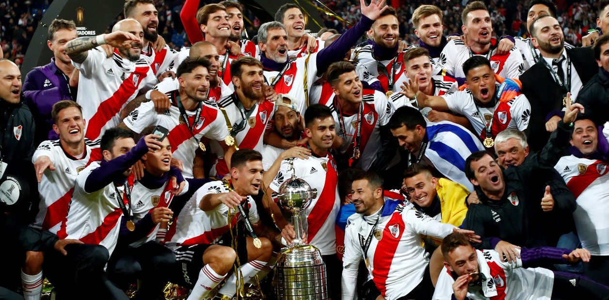

64 TITULOS OFICIALES
- Los 11 títulos internacionales organizados por la Conmebol y/o FIFA
- Copa Libertadores 1986
- Copa Intercontinental 1986
- Copa Interamericana 1987
- Copa Libertadores 1996
- Supercopa 1997
- Copa Sudamericana 2014
- Recopa 2015
- Copa Libertadores 2015
- Copa Suruga Bank 2015
- Recopa 2016
- Copa Libertadores 2018
- Los 5 trofeos entre AFA y Asociación Uruguaya de Fútbol, avalados por Conmebol
- Copa Ricardo Aldao 1936
- Copa Ricardo Aldao 1937
- Copa Ricardo Aldao 1941
- Copa Ricardo Aldao 1945
- Copa Ricardo Aldao 1947
- Los 35 títulos de Primera División en el profesionalismo
- Campeonato 1932
- Campeonato 1936
- Copa de Oro 1936
- Campeonato 1937
- Campeonato 1941
- Campeonato 1942
- Campeonato 1945
- Campeonato 1947
- Campeonato 1952
- Campeonato 1953
- Campeonato 1955
- Campeonato 1956
- Campeonato 1957
- Metropolitano 1975
- Nacional 1975
- Metropolitano 1977
- Metropolitano 1979
- Nacional 1979
- Metopolitano 1980
- Nacional 1981
- Campeonato 1985/86
- Campeonato 1989/90
- Apertura 1991
- Apertura 1993
- Apertura 1994
- Apertura 1996
- Clausura 1997
- Apertura 1997
- Apertura 1999
- Clausura 2000
- Clausura 2002
- Clausura 2003
- Clausura 2004
- Clausura 2008
- Torneo Final 2014
- Los 3 títulos de la Era Amateur
- Copa Competencia Jockey Club 1914
- Tie Cup 1914
- Campeonato 1920 (Asociación Amateur de Fútbol)
- Las 10 copas nacionales
- Copa Competencia 1932
- Copa Ibarguren 1937
- Copa Ibarguren 1941
- Copa Adrián Escobar 1941
- Copa Ibarguren 1942
- Copa Ibarguren 1952
- Copa Campeonato 2013/14
- Copa Argentina 2016
- Copa Argentina 2017
- Supercopa Argentina 2017
